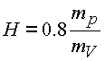
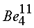

|
В. И. ЕЛИСЕЕВ ВВЕДЕНИЕ В МЕТОДЫ ТЕОРИИ
ФУНКЦИЙ ПРОСТРАНСТВЕННОГО КОМПЛЕКСНОГО ПЕРЕМЕННОГО |
|
5.4. Вывод формулы энергии связи атомных ядер
Структурную формулу связанной массы ядра преобразуем по законам комплексной алгебры, выделяя полевую массу и центральное ядро
.
Таким образом, ядро имеет массу
,
окруженную мнимой оболочкой
 .
.
В мнимой оболочке движение энергетической массы происходит по циклической кривой С. В e -туннеле вихря происходит квантовый обмен между нуклонами. Согласно квантовой теории обменный квант движется со скоростью света, при этом согласно исследованиям главы 3, обменные частицы имеют общий e -туннель.
Таким образом, обменная масса мезонов квантов ядерного взаимодействия образует оболочку ядра, которая закручивается в циклонный вихрь С
3 вокруг нуклонов и сжимает их до радиуса ядраСогласно постулату теории относительности и аппарата комплексной алгебры обменные кванты взаимодействия находятся в пространство ядра в большей по величине размерности, чем сами нуклоны в ядре.
Создается в результате квантового обмена поле большой по величине размерности, чем то, в котором находились частицы до взаимодействия. Взаимодействие увеличивает размерность структуры.
При слиянии нуклонов в ядерную систему каждый из них выделяет в пространство сложной структуры обменную массу, образуя ядерную оболочку (с ядерными энергетическими туннелями. Обменные кванты в оболочке двигаются по простейшим пространственным траекториям типа С3 , охватывая тороидальную поверхность, и проходят e -туннель со скоростью света. Пространство нуклонов, таким образом, согласно выдвинутой гипотезе находится под давлением, создаваемым оболочкой.
В силу независимости поверхностного интеграла от аналитических функций от формы замкнутой поверхности, поверхность туннеля может быть деформирована во внутреннюю поверхность сферы. В этом случае создается оболочка толщиной d или
s. Это было обосновано в главе 1.При взаимодействии, как уже отмечалось, пространства создают сложное образование, которое имеет свой туннель При этом туннели взаимодействующих пространств изменяют свои характеристики. При интенсивном взаимодействии туннель сложной частицы имеет меньший радиус.
На рис. 54 представлена модель взаимодействия двух нуклонных вихрей, которые образовали более сложное пространство со своей циклической кривой С3 и e -туннелем радиуса
.Рис. 54. К выводу формулы "Энергия связи атомных ядер"
В результате слияния образуется кольцо взаимодействия площадью
.
Согласно комплексному анализу e -туннель сложной частицы с радиусом e
2 выходит в пространство большей по величине размерности, чем размерность e -туннелей взаимодействующих пространств с туннелями e 1, e -туннель является проекцией в пространство, в которое он вложен, что и обусловливает связность всей системы.Кольцо S
K находится под давлением массы обменных квантов, находящихся в оболочке сложной структуры.Из соотношения Гейзенберга определяем максимальную толщину мнимой оболочки ядра
| , | (5.6.) |
где
Предварительный энергетический расчет (пункт 3 табл. 2 ) обосновал введение величины усредненного обменного кванта на нуклон.
Далее объем пространства по модулю, в котором находятся нуклоны, равен
| , | (5.7.) |
где RЯ, - радиус ядра.
Объем ядра
,
Объем мнимой оболочки
| . | (5.8.) |
Плотность энергии в мнимой оболочке равна
| . | (5.9.) |
Площадь сечения
циклонного e -туннеля ядра не может превышать площади сечения нуклона. Согласно модели ( рис.54) площадь , равная площади проекции нуклона, является предельной, обеспечивающей взаимодействие. В противном случае пространство разомкнется.Таким образом, максимальная площадь кольца взаимодействия стремится к величине
,
где
- радиус протона.Давление обменной массы через один e -туннель на пространство нуклонов выражается как произведение плотности энергии в оболочке
| . | (5.10.) |
В результате получена формула энергии связи одного циклонного вихря в ядре. За радиус нуклона
.
В числителе и знаменателе формулы стоит квадрат длины, поэтому в дальнейшем коэффициент 10
-13 опускаем.В результате имеем
| . | (5.11.) |
Энергия связи ядра заряда Z будет равна
(5.12.) |
Высота мнимой оболочки
H равна радиусу обменного квантаКорректируем эту величину по радиусу протона
. Из ядерной физики известноИз соотношения Гейзенберга эта величина равна
, радиус пиона , где за массу пиона на первом этапе принялиУсредненная масса протона и нейтрона равна
Поэтому принимаем
см .Радиус ядра
см , где -принимается равным 1.25Подставляя эти данные в формулу (5.12) получим
(5.13.) |
Получили формулу энергии связи для атомных ядер элементов периодической системы как функцию массового числа А , заряда
Z ядра и величины периодичности Р. Результаты расчетов по этой формуле сведены в таблицу 1.Сходимость результатов расчета с эксперементальными данными позволяют продолжить исследования предложенной гипотезы.Выведем формулу энергии связи атомных ядер как функцию большего количества
Параметров.
Высоту мнимой оболочки обменных квантов корректируем по радиусу нуклона
.
Коррекция законна, так как и нуклоны, и усредненная масса обменного кванта находятся в единой структуре взаимодействия, а согласно экспериментальным исследованиям радиус протона остается без изменения при больших энергиях взаимодействия. Формула преобразуется к виду
.
Формула, еще раз отметим, определяет энергию связи одного циклонного вихря. Энергия связи ядра будет иметь вид
| . | (5.14.) |
Исследуем выведенную формулу. Определим критическую величину усредненного обменного кванта на один нуклон из условия
.
которое после несложных преобразований дает уравнение
,
которое имеет один корень
.
Отсюда
и, следовательно, усредненная масса обменного кванта пропорциональна массе нуклона и обратно пропорциональна радиусу ядра.
Вторая производная
тождественно равна нулю,поэтому величина
является стационарной.Радиус атомного ядра выражается формулой
,
где
см.В расчете берем r=1.4 -1.2, без коэффициента 10
-13, как было оговорено выше. Коэффициент r0 определен экспериментально. Радиус вихря в ядре равен.
Таким образом, стационарная величина обменного кванта равна
| (5.15.) |
Подставим ее в формулу энергии связи
.
Окончательно будем иметь
Не ограничивая общности рассуждений за массу протона, примем усредненную массу протона и нейрона
.
Тогда
| . | (5.16.) |
Если принять
, как это рекомендует теоретическая физика, то и тогда |
(5.17.) |
Откуда энергия связи одного вихря в ядре равна
.=192.2682 МэВ
Эта величина отличается от экспериментальной на 0.36282 МэВ, то есть на величину, меньшую чем масса электрона; =0,511 МэВ.
При обосновании циклонной модели атомного ядра было сделано заключение, что при распаде ядра урана происходит взрыв одного циклонного e -туннеля. Экспериментально известна энергия, которая выделяется при одном акте деления. Эта энергия, по разным источникам, заключена в интервале от 180 - 200 МэВ. Энергия связи одного циклонного вихря соответствует этому интервалу энергий. Это есть прямое доказательство выдвинутых гипотез и проведенных исследований.
Формула энергии связи (5.17) совпала с формулой, которая была выведена при обосновании циклонной структуры ядер. Поэтому табл. 2 служит одновременно экспериментальным подтверждением выведённой формулы.
В табл. 2 сведены результаты расчета по формуле (5.17.) энергии связи атомных ядер для устойчивых элементов. Из анализа таблицы следует вывод: величина периодичности формирования циклонных вихрей соответствует ранее установленной при исследовании системы элементов и составляет 9.2 - 9.9 единиц заряда, коэффициент при радиусе ядра равен рекомендуемому в физике ядра =1,25. С учетом влияния величины периодичности Р на радиус атомного ядра произведен расчет энергии связи легких ядер периодической системы элементов и их изотопов и сведен в табл. 3. Усредненная величина обменного кванта устойчиво колеблется в пределах 203 МэВ 214 МэВ. Если сопоставить эту величину с массой пиона 139,5669 МэВ, =134.9626 МэВ, то следует вывод, что три нуклона в ядре обмениваются двумя пионами.
Расчетные формулы дают достаточно стабильные результаты по энергии связи, радиусу ядра, величине обменного кванта. Ни одна из величин не выходит за пределы экспериментально установленных в ядерной физике.
Проведем исследования энергии связи ядер легких элементов от водорода до неона , где циклонный вихрь не вышел на энергию своего насыщения. Из формулы (5.14) произведем оценку радиусов ядер. Энергию связи ядер возьмем из таблицы 2 [12], определим радиус водорода в зависимости от периодичности системы, в которой он может находиться, при энергии связи, равной 2,2 МэВ
| P | 10 | 15 | 21 | 28 | 36 | 45 | 54 | 66 | 78 |
| 2.57 | 2.25 | 2.0 | 1.83 | 1.7 | 1.6 | 1.5 | 1.4 | 1.3 | |
| 107.49 | 108.12 | 108.15 |
Радиус ядра уменьшается с ростом величины периодичности. Величина обменного кванта остается постоянной. Произведем расчет для изотопа водорода
| P | 10 | 15 | 21 |
| 1.64 | 1.43 | 1.28 | |
| 147.37 | 147.39 | 147.5 |
Имеем уменьшение радиуса ядра с увеличением величины периодичности системы. Величина обменного кванта остается постоянной.
Изменение величины усредненного обменного кванта представлено ниже
|  | ||||||||||
| 108 | 147.5 | 176.6 | 180 | 189 | 194 | 198 | 201 | 206 | 207 | 193 |
Таким образом, величина усредненного обменного кванта выходит на продельную величину при окончательном формировании одного циклонного вихря в ядерной материи и составляет из расчета на три нуклона в ядре два пиона по энергетической массе.
Согласно проведенным исследованиям циклонный вихрь представляет результат разложения в пространстве энергии на два не суммируемых вектора, взаимно перпендикулярных и приложенных в разных окрестностях своего e -туннеля. Это разложение создает поле различной физической природы. В данном случае поле ядерных сил.
Так как величина обменного кванта совпала в пределе с величиной энергии связи одного циклонного вихря, то вихрь с энергией
имеет модуль, равный по величине энергии обменного кванта
200 МэВ
Мини оглавление:
[0], [1.1.1, 1.1.2, 1.1.3, 1.1.4, 1.1.5, 1.1.6, 1.1.7, 1.1.8, 1.2, 1.2.1, 1.2.2, 1.2.2.a, 1.2.2.b, 1.2.2.c, 1.2.2.d, 1.2.2.e, 1.2.2.f, 1.2.2.g, 1.2.2.h, 1.2.3, 1.3.1, 1.3.2, 1.3.3, 1.3.4, 1.3.5, 1.3.6, 1.4.1, 1.4.2, 1.5, 1.6, 1.7.1, 1.7.2, 1.7.3.1, 1.7.3.2, 1.7.3.3, 1.7.4.1, 1.7.4.2, 1.8.1], [2.1, 2.2],[3.1, 3.2, 3.3, 3.4.1, 3.4.2, 3.4.3, 3.4.4, 3.4.5],[4.1, 4.2, 4.3, 4.4],[5.1, 5.1.Рис.52, 5.2, 5.3, 5.4, 5.4.Т1, 5.4.Т2, 5.4.Т3, 5.5.1, 5.5.2, 5.5.3, 5.5.4],[6.1.1, 6.1.2, 6.2.1, 6.2.2, 6.2.3, 6.2.4, 6.2.5, 6.3, 6.4.1, 6.4.2, 6.5.1, 6.5.2],[7.1, 7.2, 7.3, 7.4, 7.5, 7.6, 7.7.1, 7.7.2, 7.8.1, 7.8.2, 7.8.3, 7.9],[8.1, 8.2.1, 8.2.2, 8.3, 8.4, 8.5, 8.6, 8.6.T1, 8.7, 8.8.1, 8.8.2, 8.8.3, 8.9.1, 8.9.2, 8.9.3, 8.10, 8.10.T2, 8.10.T3],[9.1, 9.2, 9.3, Рис.88, 89, 90, 91, 92, 93, 94, 95, 96, 97, 98, 99, 100],[10.1, 10.2, 10.3, 10.4, 10.5, 10.6, 10.7, 10.8, 10.9, 10.10, 10.11, 10.12, 10.13, 10.14, 10.15.1, 10.15.2, 10.16.1, 10.16.2, 10.17, 10.18],[11]
Размещенный материал является электронной версией книги: © В.И.Елисеев, "Введение в методы теории функций пространственного комплексного переменного", изданной Центром научно-технического творчества молодежи Алгоритм. - М.:, НИАТ. - 1990. Шифр Д7-90/83308. в каталоге Государственной публичной научно-технической библиотеки. Сайт действует с 10 августа 1998.
E-mail: mathsru@gmail.com